Operating Documentation
Direction 5500113, Rev# 3
Discovery MR750 3.0T Service Methods
Module Version 5.0, Version Date 3/23/10
Operating Documentation |
| Required Persons | Preliminary Reqs | Procedure | Finalization |
|---|---|---|---|
| 1 | 15 mins |
Follow this process to prepare for the automated MCQA test using the 3.0T HD Cardiac Array by GE/USAI (M3334TS) .
| NOTE: | Coils do not ship with phantoms. Phantoms come in a unified phantom set with the MR system. |
| Item | Qty | Effectivity | Part# | Manufacturer | |
|---|---|---|---|---|---|
| Phantom | 1 | Legacy Phantom Set | 2381683-3 | - | |
| Phantom Positioner | 1 | Legacy Phantom Set | 2412782 | - | |
| Phantom Anterior Positioner | 1 | Legacy and Unified Phantom Set | 2413102 | - | |
| TL Unified Phantom, SiOil | 1 | Unified Phantom Set | 5343347-2 | - | |
| Condition | Reference | Effectivity |
|---|---|---|
The coil configuration name HD Cardiac must be installed to run this tool. | - | - |
Position the posterior coil component on the system table. Ensure that the Velcro straps hang free on either side of the table. See Illustration 1.
Illustration 1: Posterior Coil Component Placement
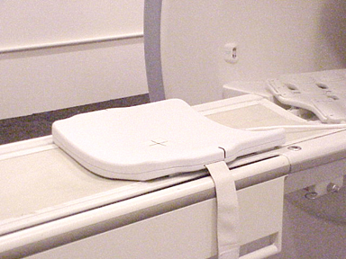
Position bottom phantom positioner on top of the posterior coil component. See Illustration 2.
Illustration 2: Bottom Phantom Positioner Placement
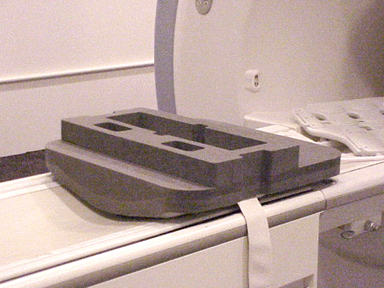
Insert phantom into positioner as shown in Illustration 3.
| NOTE: | Low SNR could result if phantom is incorrectly placed. |
Illustration 3: Positioning Phantom
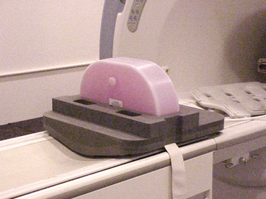
Place Anterior Phantom Positioner as shown in Illustration 4.
Illustration 4: Placement of Anterior Phantom Positioner
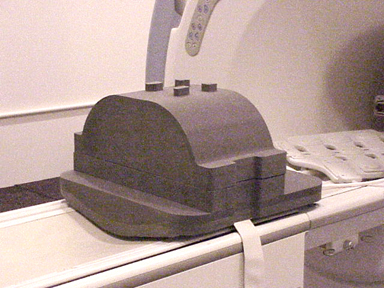
Place anterior portion of coil over phantom positioner as shown Illustration 5.
Illustration 5: Placement of Anterior Coil
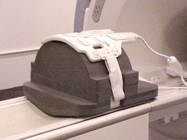
Secure with Velcro straps.
Connect coil to system.
Move the table towards the bore and landmark in center of anterior coil portion on the lines provided. See Illustration 6.
Illustration 6: Landmarking the Cardiac Coil
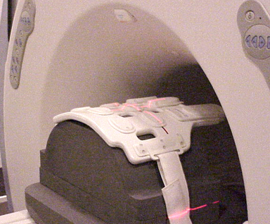
Proceed to the MCQA procedure to test the coil.
Place the posterior section of the coil on the table as shown in Illustration 7.
Illustration 7: Posterior Coil Component Placement
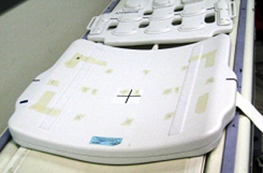
Place the TL unified phantoms over the posterior section in such a way that the phantom is well centered in both S/I and R/L directions as shown in Illustration 8 and Illustration 9.
Illustration 8: Aligning the TL Phantom in S/I
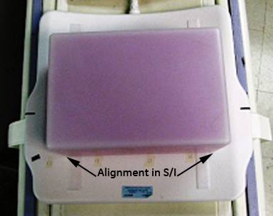
Illustration 9: Aligning the TL Phantom in R/L
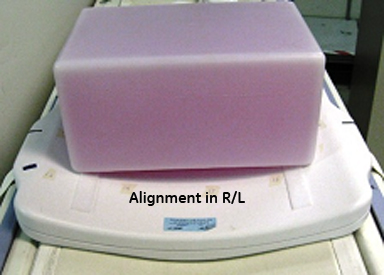
Place the anterior section on the phantom set such that the coil is well centered in both S/I and R/L directions with respect to the phantom. Fasten the Velcro straps so that the coil firmly snugs the phantom as shown in Illustration 10.
Illustration 10: Placement of Anterior Section
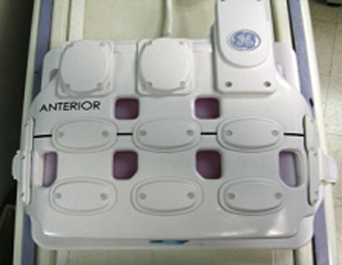
Connect the coil to respective port of the system LPCA.
Landmark the coil at the cross mark as shown in Illustration 11 and press advance to scan.
| NOTE: | Make sure to align the markings to keep the posterior aligned with the anterior part of the coil. |
Illustration 11: Landmark the Coil
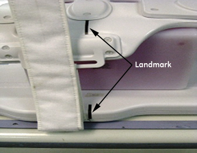
Proceed to the MCQA procedure to test the coil.
No finalization steps.